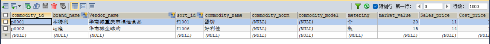

web总结
一、电商购物
用户登录之后，能够购买商品，将商品添加到购物车生成订单，也可以注册商品品牌，成为供应商，注册商品分类和添加商品到商品购物界面，让其他用户购买商品
对于商品的信息进行调整，然后根据购买商品的数量进行运算，订单由商品的基本信息以及用户购买数量，商品总价等构成，商品品牌，供应商，商品分类则是
商品的基本信息组成部分
二、开发过程
1.采用的工具与技术总览
前端页面设计涉及技术：html5+css3
后端开发设计技术：jsp+servlet+javaBean+jdbc+dao
模板引擎：jsp（el与jstl）
服务器与java版本：Tomcat9.0.61 java18
开发与调试工具：Eclipse IDE 2020-03 Chorme MySQL SQLyog
2.电商管理系统数据库的设计
(1)数据库管理系统以及数据库可视化工具的选择
数据库管理系统：mysql数据库管理系统
数据库可视化工具：Navicat for MySQL
(2)数据库表关系的分析说明
为了减少表的数据冗余，达到数据库设计的三范式，就要避免表设计时候出现的非主键字段的部份依赖与传递依赖，
实体性之间是多对多的联系我们就可以采取三张表的设计，关机表两个外键，如果是一对多，我们可以设计两张表，多方的那张表加外键。
(3)数据库以及数据库中表的创建
在mysql中建立了一个名为shop的数据库用来存放与本系统相关的表的信息，
所有的表都不采用业务主键，主键只是为了唯一标识表中的一条记录
项目遵循了软甲开发的三层架构的设计，表现层（servlet，jsp与web浏览器等）用于展示数据，业务层（service）用于处理业务需求，
持久层（dao）用于完成与数据库的交互
三、遇到的问题
(1)页面输入框传值乱码
(2)将值传到页面获取数据出错
(3)对于css的样式结构不清晰，页面样式简单
(4)前端和后端的数据交互只能体现在form表的提交
(5)对于github的动态页面部署
四、已解决的问题
(1)在页面间的交互中，由于客户端的编码和服务器端不同，所以得将客户端传输的数据变为和服务器端的相同，及改为UTF-8 ==>> req.setCharacterEncoding("UTF-8");
(2)对于从数据库中搜索到的集合List，得引入jar包pages
taglibs-standard-compat-1.2.5.jar
taglibs-standard-impl-1.2.5.jar
taglibs-standard-jstlel-1.2.5.jar
taglibs-standard-spec-1.2.5.jar
然后使用<c:forEach></c:forEach>循环的取出List列表中的对象，获取对象的属性
五、未解决的问题
对于github的部署页面只能够部署静态页面，不能够将动态的页面部署，所以将页面部署到github上失败
总结
1：掌握的知识
通过网上商城这个实战项目的开发，不仅了解到了一个项目的业务逻辑，而且掌握了实现相关业务功能的方法。
通过这个实战项目，了解到了模块化开发项目的基础结构的搭建，以及项目文件的管理方式。
通过这个实战项目，运用封装的接口api文档实现了客户端服务器之间的交互知识。
通过封装的axios实例对象与方法，向服务器请求数据，然后渲染页面。
通过运用localStorage本地储存的相关知识，实现了页面之间的交互传值。
2：进步的意义
通过这个实战项目的开发，我不仅收获了很多新的知识，并能够将所学的知识进行合理的运用。在编写项目的过程中，能够更加充分的认识到自己的不足。由于在编写过程中，存在很多的知识盲点，很多功能都存在大大小小的bug。经过不断的查阅知识，顿时豁然开朗。这次的项目实战，真的使我受益匪浅。它让我更加坚定了，我需要更加努力学习的信念。
对于html的学习稍有欠缺，主要还是JavaScript不能灵活的运用，和css样式不够美观，之后还得学习vue框架，让页面、程序更加的简介美观。
电商界面
